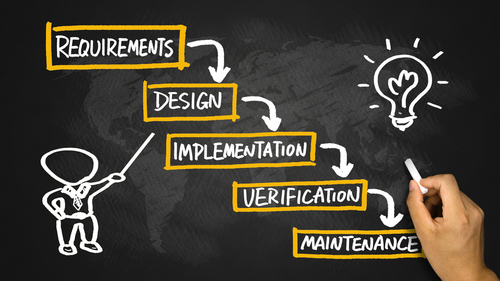

Waterfall
Traditionally used for big project however can be advantageous for service SME's to incorporate this method in their business Read More...

Since 2000 SME's have increased by 59% whereby small business employers contribute to 19% and medium contibute to 24%, (Business Population Estimate, 2016). A mintel report found that SME's account for 99.9% of businesses within the private sector of which contibuted 67% of total employment and turnover of 57%. These statics show the social responsibity contribution within societies. Such large numbers has not been reflected implementing project managment strategies to succh businesses increasing their success.
As an SME resources are typically limited. Where SME's are multiskilled taking on more than one job in comparison to the larger organisations. Choosing the right type of Project Management Methodolgy (PMM) is critical. This website will look to help you choose one that works well for your business and working with your business, so that you can actually focus on your business. We have looked at three different methodolgies which research show are benefial to SME's and look to give you the important facts helping you choose the PMM best suitable for your business.
Traditionally used for big project however can be advantageous for service SME's to incorporate this method in their business Read More...
This is used for those that have a team whereRead More...
Prince2 is used on multiple different industries worldwide. Find out to see how Prince2 can be advantageous to your business.Read More...
Still unsure? Take this questionnaire to find out which PMM is most suitable for your businessRead More...